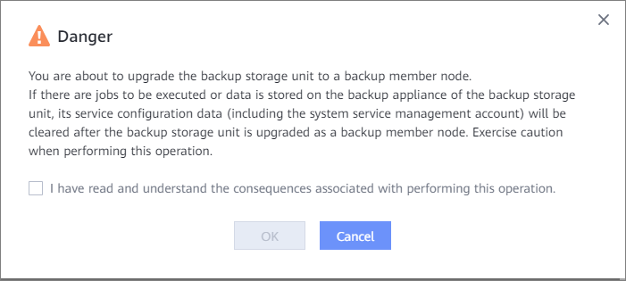

The OceanProtect supports upgrading the backup storage unit corresponding to the OceanProtect as a member node. This section describes related operations.
Prerequisites
- The internal communication network plane has been added for the active node, and at least two IP addresses have been reserved for the backup storage unit to be upgraded.
- The version of the OceanProtect corresponding to the backup storage unit to be upgraded is the same as that of the active node.
- The OceanProtect corresponding to the backup storage unit to be upgraded is not added to other replication clusters, multi-domain clusters, or backup storage units.
- The IP address of the internal communication network plane of the OceanProtect corresponding to the backup storage unit to be upgraded must be able to communicate with the IP address of the internal communication network plane of the active node.
- No job is running on the OceanProtect corresponding to the backup storage unit to be upgraded.
- You have downloaded the CA certificate of the Server Certificate type of the OceanProtect corresponding to the backup storage unit and imported it to the active node. The type is set to Backup/Multi-domain/Replication Cluster. For details about how to import a CA certificate, see "Downloading a Certificate" and "Importing a Certificate" in the OceanProtect DataBackup 1.5.0-1.6.0 Security Configuration Guide.
Precautions
- Only the backup storage unit corresponding to the OceanProtect can be upgraded as a member node.
- Service configuration data will be cleared after the backup storage unit corresponding to the OceanProtect, where there are jobs to be executed or data is stored, is upgraded as a member node. Exercise caution when performing this operation.
- The backup storage unit corresponding to the OceanProtect X3000 Appliance cannot be upgraded as a member node of the OceanProtect X6000/X8000/X9000 Appliance and vice versa.
Procedure
- Choose .
- Click Backup Storage Unit Groups.
- Click Backup Storage Units.
- In the row that contains a backup storage unit, choose .
- Enter the member node information in the window that is displayed on the right. For details, see Table 1.
- Click OK.
- In the Danger dialog box that is displayed, confirm the information, select I have read and understand the consequences associated with performing this operation., and click OK.

Copyright © Huawei Technologies Co., Ltd.